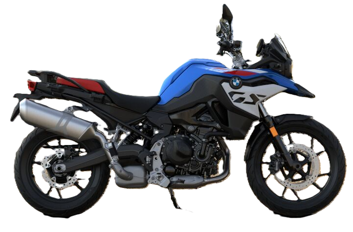
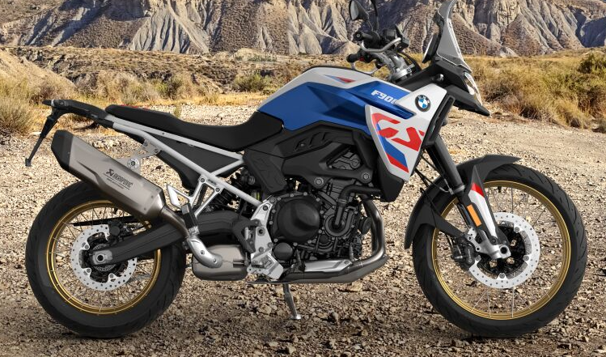
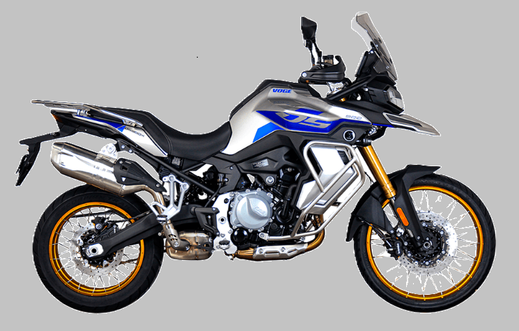
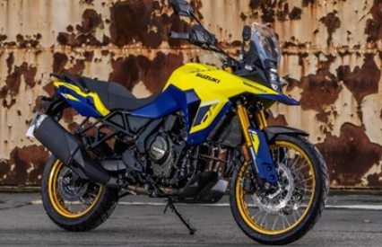

Which one will be next…
BMW F900XR
I test rode the F800GS, which I initially liked, and it was fantastic. However, upon returning to the showroom, I spotted the XR. It offered the upright seating position I’ve come to prefer, yet it seemed more suited for street riding than the GS’s softer “soft road” suspension. Unfortunately, my current Honda doesn’t have enough trade-in value to make the switch just yet, but in another 10 months, I might become the proud owner of an XR.

BMW F800GS for comparison

BMW F900GS for comparison

VOGE DS900X
Maybe something from China, check out the similarities to the bike above, same factory, shares most of the parts, two thirds the price.

Suzuki V-Strom 800
I really enjoyed my old V-Strom 1050, so it’s a strong contender for my next bike as well. A smaller parallel twin engine, which, if similar to the Honda engine, should be a joy to ride.